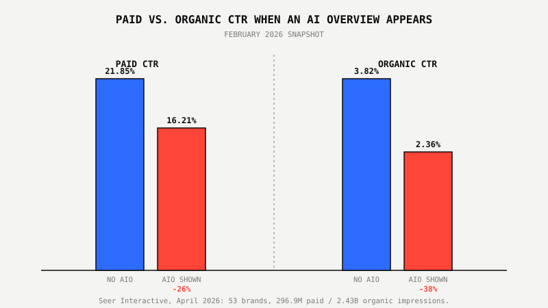
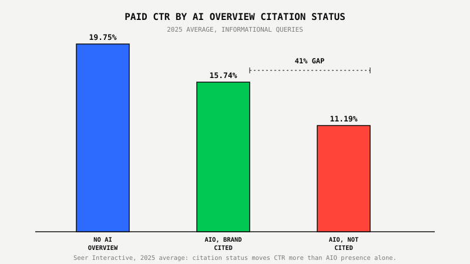

AI Overviews Are Already Cutting Your Google Ads Click-Through Rate By 26%

Key Takeaways
- Paid Google Ads CTR falls from 21.85% to 16.21% when an AI Overview appears on the same results page, a 26% relative drop, per Seer Interactive's April 2026 study of 296.9 million paid impressions across 53 brands.
- Organic CTR falls even harder on the same AI Overview queries: down 38%, from 3.82% to 2.36%, over the same February 2026 window.
- Getting cited inside the AI Overview matters more than the AI Overview simply existing. Cited brands averaged 15.74% paid CTR through 2025, versus 11.19% for brands present in the search results but not cited, a 41% gap.
- Google is expanding paid inventory to offset the click loss. Ads appeared on just 5.17% of AI Overview search results in March 2025, climbing to 25.56% by October 2025, a 394% increase, per Semrush's 10 million-keyword dataset.
- CPC hasn't spiked the way a CTR drop like this might suggest. WordStream's 2026 benchmarks put average Google Ads CPC at $5.42, up only 3% year over year, with cost per lead actually falling to $66.69.
Remember The Free Sample Table That Killed The Aisle Behind It?
Grocery stores put a sample table in the aisle to drive sales. A shopper walks up, tastes a full sample cup, and gets the answer they actually came for: does this taste good? A lot of them decide they've learned enough right there and keep walking. The product sitting on the shelf ten feet away, the one that actually pays the store's bills, sees fewer hands reach for it, even though foot traffic down that aisle never dropped.
Your Google Ad is standing on that shelf right now. The AI Overview is the sample table, positioned above the ad, answering the searcher's question before a click ever happens. Traffic to the search results page hasn't gone anywhere. What changed is how many of those searchers still feel like they need to click on anything at all.
That's not a theory. It's measured, and the number is real.
What The Data Actually Shows
Paid Google Ads CTR falls 26% on search queries where an AI Overview appears, from 21.85% down to 16.21%, according to Seer Interactive's most recent study, published April 24, 2026. The study tracked 53 brands across 5.47 million queries, 2.43 billion organic impressions and 296.9 million paid impressions, from January 2025 through February 2026, making it one of the largest longitudinal datasets on AI Overview behavior published so far.
That 26% figure is a snapshot of February 2026, the most recent month in the dataset. It isn't a worst-case number pulled from last year's panic. It's where things actually stand right now.

Why Organic Is Bleeding Worse Than Paid
Organic clicks are taking the bigger hit. The same February 2026 snapshot shows organic CTR falling 38%, from 3.82% down to 2.36%, on queries where an AI Overview appears, a steeper decline than the 26% drop on paid CTR over the same window.
The gap makes sense once you look at the layout. A paid ad still gets a dedicated, visually distinct slot, either above the AI Overview or beneath it, while organic blue links get pushed further down the page, competing with an AI-generated summary that already answered the question. Paid held up comparatively better through the roughest stretch too: while organic CTR on AI Overview queries collapsed from 3.19% in January 2025 to a floor of 1.31% in December 2025 before partially recovering to 2.36% in February 2026, paid CTR on those same queries stayed in a comparatively tight 13% to 17% band the entire time.
Citation Beats Presence: The Real Lever You Control
Whether your brand gets cited inside the AI Overview's text predicts your CTR far better than whether an AI Overview shows up at all. Across 2025, brands cited inside the AI Overview averaged 15.74% paid CTR. Brands that were present in search but not cited inside the summary averaged just 11.19%, a 41% gap between the two. Both numbers sit below the 19.75% baseline for queries with no AI Overview at all, but the gap between cited and uncited is the one you can actually move.
This is exactly why we treat AEO and paid media as the same discipline, not two separate departments. The content and schema work that gets you cited inside an AI Overview is the same work that protects your paid CTR once that AI Overview shows up.

Google Is Buying Itself Room To Offset The Drop
Google is putting more ads next to AI Overviews, and it's happening fast. Ads appeared on just 5.17% of AI Overview search results in March 2025. By October 2025, that number had climbed to 25.56%, a 394% increase in eight months, according to Semrush's analysis of more than 10 million keywords. Most of that growth sits at the bottom of the AI Overview, with roughly a quarter of AI Overview search results now carrying an ad in that position alone.
That's Google protecting its own ad revenue while both organic and paid CTR come under pressure. More ad slots per AI Overview search means more chances at a click, even as the odds of any single searcher clicking anything at all keep dropping.
Why Your CPC Hasn't Exploded (Yet)
It hasn't, and that's worth sitting with for a second. WordStream's 2026 Google Ads Benchmarks, covering more than 13,000 search campaigns across 23 industries from April 2025 through March 2026, put average CPC at $5.42, up only 3% year over year from $5.26. Cost per lead actually fell, to $66.69, the first year-over-year CPL decrease WordStream has recorded since before 2020. Conversion rates rose in 87% of the industries tracked.
Read together, that's not an account getting more expensive for the same traffic. It's an account converting better on the traffic that's still willing to click. The searchers absorbed by the AI Overview's free answer were mostly the ones who were never going to convert anyway: low-intent, information-only clicks that used to pad CTR without paying for themselves. What's left behind, on average, converts at a higher rate for close to the same price.
What Smart Businesses Are Doing About It
They're not cutting budget off a CTR benchmark that no longer means what it used to. Three things are actually moving the needle right now: fixing conversion tracking so the account can see which of the remaining clicks are worth the higher intent, treating AEO and citation work as part of the paid media plan since citation status is the single biggest lever in this data, and rebuilding account structure around the searchers who are still clicking instead of the volume that used to click.
None of that is theoretical. The Google Ads account behind $22.9M in revenue at 632% ROAS wasn't rebuilt by chasing a CTR number. It was rebuilt around revenue per click, which is the metric that actually survives an AI Overview eating into impression volume.
Worried your CTR drop is a tracking problem, not an AI Overview problem? We'll tell you which one, free.
See The $800 Google Ads Proof Program™ ↗